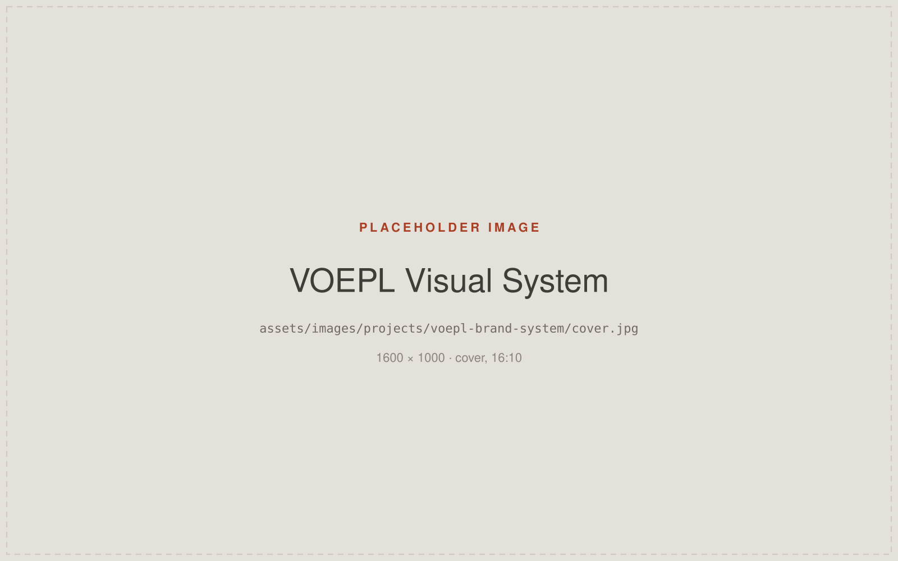
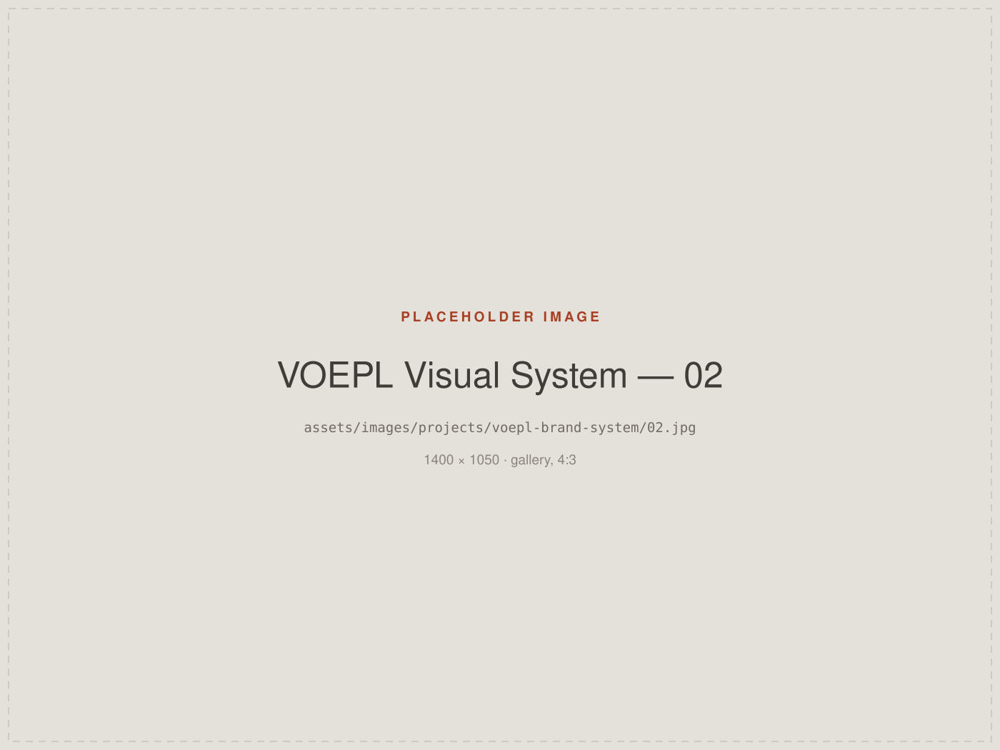

Designing a Connected Corporate Visual System
Designing consistent visual communication across multiple touchpoints of a manufacturing organisation.
- Role
- Digital Marketing Executive — visual design and corporate communication
- Organisation
- Virtuoso Optoelectronics Limited (VOEPL)
- Disciplines
- Brand Systems · Visual Design · Corporate Communication
- Areas of work
- Presentations, product communication, print collateral, internal and HR materials, event design

Context
A manufacturing organisation communicates through far more surfaces than a logo and a website. Sales decks, product sheets, brochures, catalogues, HR induction material, ID cards, email signatures and event graphics all speak on the company's behalf — often to the same audience, in the same week.
My work at VOEPL involved designing across that whole range rather than treating any one item as a standalone job.
Challenge
When collateral is produced item by item, on request, it drifts. Two brochures made months apart stop looking related. A presentation prepared for one meeting sets a precedent nobody intended.
The challenge was less about any single artefact looking good, and more about making the whole set feel like it came from one organisation — while staying practical for colleagues who need material quickly.
Role
In-house design work across the touchpoints below, alongside the teams who requested and used them.
- Corporate presentations
- Product communication
- Brochures
- Catalogues
- Fact sheets
- Email signatures
- ID cards
- Internal communication
- HR induction materials
- Corporate event design
Approach
Treat the set as the deliverable
Each request was an opportunity to settle a decision that would hold for the next one — how a product is introduced, how technical specifications are laid out, how a cover behaves.
Systems, not templates alone
Shared typography, spacing and layout logic meant new material could be produced quickly without renegotiating the look every time. The aim was consistency that survives being used by other people.
Match the medium
A catalogue, a projected slide and an ID card have genuinely different constraints. Rather than forcing one layout across all of them, the system carried the family resemblance while each format was set appropriately.
Internal audiences count
HR induction material and internal communication were designed with the same care as customer-facing work — they are often a new colleague's first real impression of the company.
Selected work
Placeholders below. Show these as a connected system rather than a
gallery of unrelated pieces — see ASSETS.md.

Outcome
Outcome to be provided — only verifiable results will be published here.